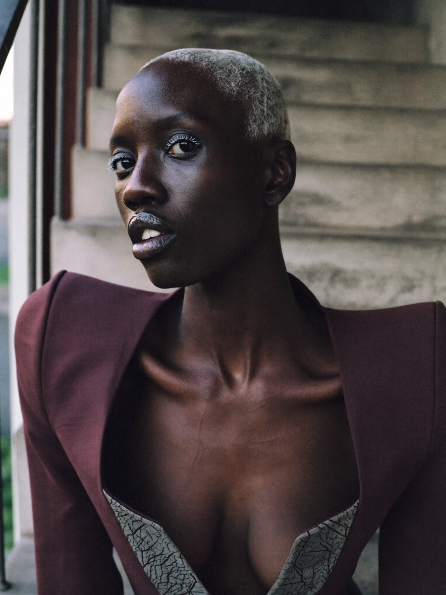
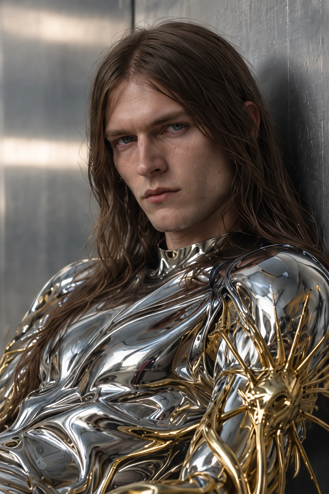
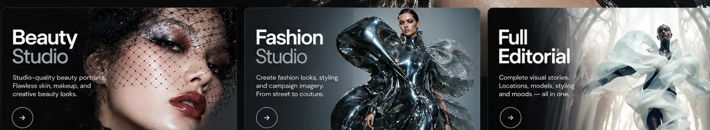

FullEditorialStudio.
Model. Style. World. Series.
Build a complete fashion story with your own models, styling and visual worlds.

Identity
Choose or upload the person for your editorial.
Choose a model
Start from a PV LAB casting reference, upload your photographs or open your private saved characters.
Casting photographs are selectable identity references, not your saved characters or generated results.
Identity guidance Advanced settings

Styling
Build the look through material, silhouette and clothing.
What are they wearing?
Choose an existing look, add your garment references or describe the wardrobe in your own words. Clothing references will not replace your model's identity.
Select up to three garment references. Each defines wardrobe, not the person or their original location.
Garment emphasis Advanced settings

Location & mood
Build a world that belongs to your story.
Set the scene.
Select a location, atmosphere and material direction. Each category contributes to the final editorial.
Reference selections guide the scene. These are not image outputs.
Mood emphasis Advanced settings
Generate your editorial.
Review the references and the series settings before creating. No credits are charged until you approve the actual server quote.
Model & fine direction Advanced settings
Real price appears in the next confirmation. For 8 or 12 images, each batch of four is quoted and approved separately.
Creating your editorial...
Preparing images using your selected model and references.

Your editorial series
Review your generated photographs.
Only completed PV LAB jobs appear here. Downloaded files are the originals returned by the generator.
Continue in Video Studio